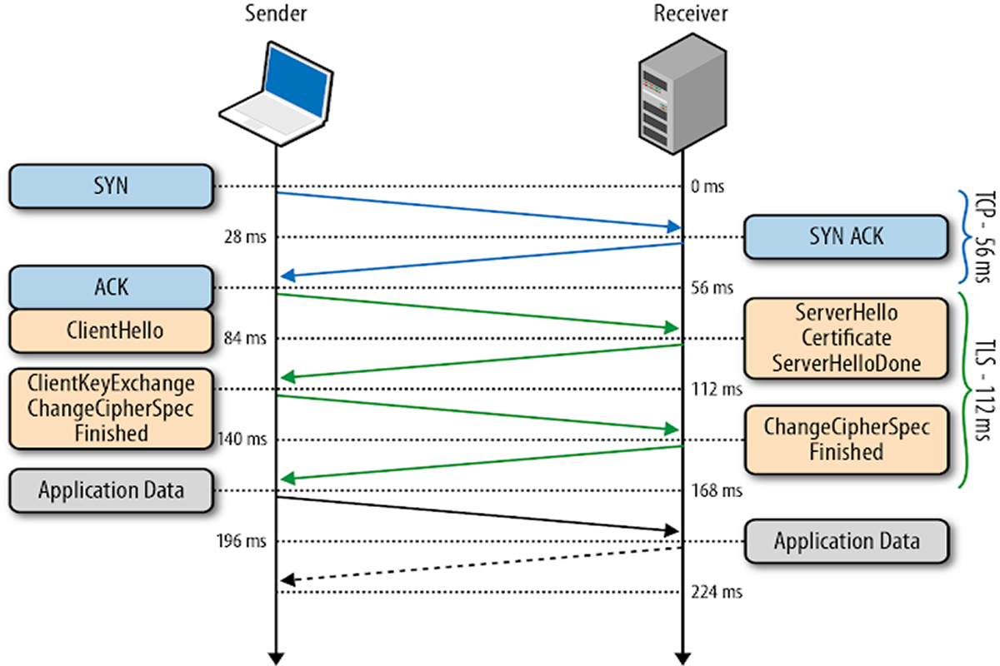

Before the client and the server can begin exchanging application data over TLS, the encrypted tunnel must be negotiated: the client and the server must agree on the version of the TLS protocol, choose the cipher suite, and verify certificates if necessary. Unfortunately, each of these steps requires new packet roundtrips between the client and the server, which adds startup latency to all TLS connections.

| 0 ms | TLS runs over a reliable transport (TCP), which means that we must first complete the TCP three-way handshake, which takes one full roundtrip. |
| 56 ms | With the TCP connection in place, the client sends a number of specifications in plain text, such as the version of the TLS protocol it is running, the list of supported ciphersuites, and other TLS options it may want to use. |
| 84 ms | The server picks the TLS protocol version for further communication, decides on a ciphersuite from the list provided by the client, attaches its certificate, and sends the response back to the client. Optionally, the server can also send a request for the client’s certificate and parameters for other TLS extensions. |
| 112 ms | Assuming both sides are able to negotiate a common version and cipher, and the client is happy with the certificate provided by the server, the client initiates either the RSA or the Diffie-Hellman key exchange, which is used to establish the symmetric key for the ensuing session. |
| 140 ms | The server processes the key exchange parameters sent by the client, checks message integrity by verifying the MAC, and returns an encrypted "Finished" message back to the client. |
| 168 ms | The client decrypts the message with the negotiated symmetric key, verifies the MAC, and if all is well, then the tunnel is established and application data can now be sent. |
TLS Parameters :- -
http://www.iana.org/assignments/tls-parameters/tls-parameters.xhtml
Source - oreilly.com